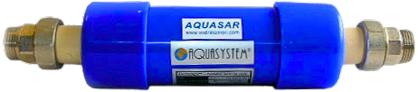
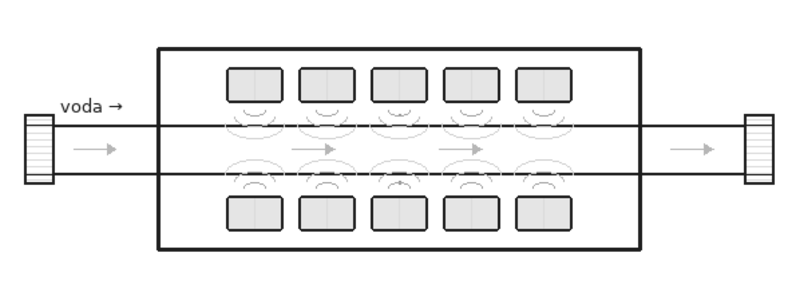
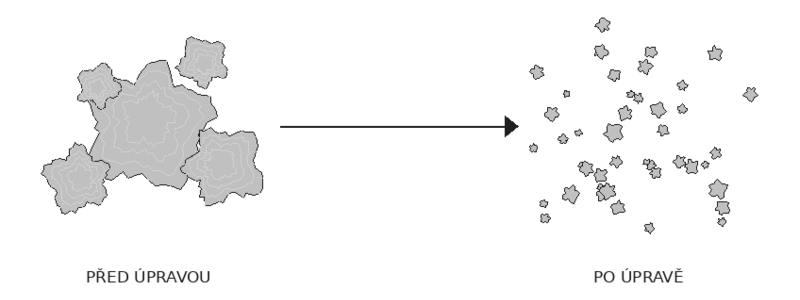
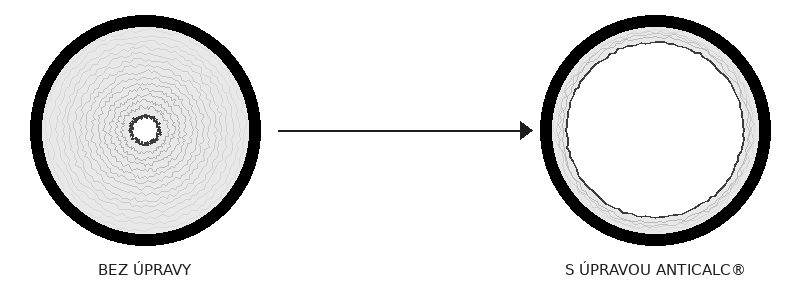

Fyzikální úpravna vody ANTICALC® chrání Vaše spotřebiče, rozvody i zdraví celé rodiny. Bez chemie, bez údržby, se zárukou 5 let a garancí vrácení peněz.
Tvrdost vody je ukazatel obsahu minerálních látek, především vápníku. Čím vyšší obsah, tím intenzivnější tvorba vodního kamene a vyšší náklady na provoz domácnosti.
Již tenká vrstva vodního kamene na topném tělese funguje jako izolant. Ohřev vody spotřebuje až o 30 % více energie – v praxi to znamená stovky korun měsíčně navíc.
Vodní kámen ucpává trysky, ničí těsnění a zkracuje životnost praček, myček, bojlerů i vodovodních baterií. Opravy a výměny přitom stojí tisíce korun.
Kapající kohoutky a protékající splachovadla jsou typickým důsledkem vodního kamene. Při ceně okolo 130 Kč za kubík jde o nemalou finanční ztrátu.
Tvrdá voda způsobuje povlak na nádobí, stopy na sanitárním vybavení, snižuje pěnivost mýdla a nepříznivě působí na pokožku i vlasy.
Tvrdost se vyjadřuje v mmol/l. Většina území ČR má vodu se střední až vysokou tvrdostí. Na Slovensku převládá voda tvrdá až velmi tvrdá.
Úpravna se instaluje na vstup vody, obvykle za vodoměr nebo na výtlak čerpadla. Montáž je jednoduchá a zařízení nevyžaduje žádnou obsluhu, údržbu ani zdroj energie.

Jakmile voda proteče úpravnou, nastartuje se magnetická rezonance. Velké krystaly vápníku, které způsobují tvrdost vody, se řízeně rozpadají na nanočástice.

Vzniklé nanokrystaly nemají dostatečně velké plochy, aby se na sebe mohly lepit a vrstvit. Vodní kámen tak jednoduše nevzniká.

Nanokrystaly unášené proudem vody působí abrazivně – postupně obrušují a odstraňují stávající nánosy vodního kamene v celém systému rozvodů.
Řešení osvědčené v domácnostech, bytových domech i průmyslových provozech. Se zárukou 5 let a garancí úplného vrácení peněz.
Životnost praček, myček, bojlerů a kotlů se prodlouží na maximum. Konec nečekaných poruch způsobených vodním kamenem.
Odstranění izolačních vrstev na topných tělesech snižuje náklady na ohřev vody. V praxi to představuje stovky korun měsíčně.
Zařízení nepotřebuje žádný zdroj energie, žádné chemické náplně ani servisní zásahy. Po instalaci pracuje zcela autonomně.
Během několika měsíců se nanokrystaly postarají o kompletní vyčištění vnitřních stěn potrubí, stoupaček i teplosměnných ploch.
Na rozdíl od chemických změkčovačů ANTICALC® neodstraňuje z vody vápník ani hořčík – oba prvky zůstávají a slouží Vašemu zdraví.
Účinnost magnetů klesá za 50 let o pouhá cca 4 %. Na zařízení poskytujeme plnou záruku 5 let s garancí vrácení peněz.
Zdravotní význam ANTICALC® spočívá především v tom, co z vody neodstraňuje.
Při chemickém změkčování vody dochází k odstraňování vápníku a hořčíku – tedy prvků, které jsou pro lidský organismus naprosto nezbytné. To je u pitné vody nepřijatelné.
Fyzikální úpravna ANTICALC® pracuje principiálně odlišně. Mění pouze strukturu a velikost krystalů, aniž by z vody cokoliv odebírala. Voda si zachovává všechny zdraví prospěšné vlastnosti a zároveň přestává tvořit škodlivý vodní kámen.
Chemické změkčovače navíc vyžadují trvalou odbornou obsluhu – kontrolu tvrdosti na výstupu a pravidelnou regeneraci. Bez kvalifikované údržby může paradoxně dojít k vyplavování minerálů a výsledná voda může být tvrdší než na vstupu.
Zařízení se instaluje na vstup vody do objektu, obvykle za vodoměr, nebo na výtlak čerpadla. Tím je chráněn celý systém rozvodů studené i teplé vody. Lze ho také instalovat cíleně před konkrétní spotřebič.
Struktura vody se mění okamžitě při průtoku zařízením. Kompletní vyčištění stávajících nánosů vodního kamene v rozvodech trvá řádově několik měsíců.
Ne. ANTICALC® nevyžaduje žádnou údržbu, žádnou obsluhu, žádné náplně ani žádný zdroj energie. Po instalaci pracuje zcela samostatně po celou dobu životnosti.
Pro potrubí o průměru větším než 1" se provádí vícenásobná montáž – jednotlivé kusy úpravny se řadí vedle sebe (paralelně). Tím se sčítá průřez a i ve špičkách je zajištěn potřebný průtok. Jednou úpravnou proteče cca 50 l/min, při paralelním zapojení dvou kusů 100 l/min atd.
Pro správnou činnost úpravny je nezbytné, aby ve vodě nebylo přítomno žádné elektrické napětí. To se zajistí dokonalým pospojováním potrubí a uzemněním ve smyslu platných norem. Úpravnu doporučujeme přemostit měděným vodičem o průřezu min. 6 mm² a na jedné straně spojit se zemí. Podrobný návod je součástí balení.
Ano, úpravna efektivně rozkládá molekuly chlóru. Po úpravě není chlór ve vodě cítit ani chuťově, ani čichově.
Ano. Vodní sliz je tvořen bakteriemi a řasami. ANTICALC® zabraňuje tvorbě řas a usmrcuje bakterie, čímž pomáhá udržovat celý vodovodní systém v hygienicky bezpečném stavu.
Ano. Zařízení má uzavřené magnetické siločáry, takže může být instalováno v těsné blízkosti vodoměru, pračky, kotle i dalších spotřebičů bez jakéhokoliv vzájemného ovlivnění.
Ne. Účinnost zařízení je dána hydrodynamickými vlastnostmi pohybující se vody, nikoliv statickými vlastnostmi kovových či plastových trubek. Upravená voda nemá na materiál potrubí žádný negativní vliv.
Zařízení prošlo testováním ve zkušebnách ve Slovenské republice, jejichž atesty jsou v ČR plně uznávány. Všechny produkty splňují technická i hygienická kritéria Evropské unie.
Ano. Kromě pětileté záruky na zařízení nabízíme rovněž garanci úplného vrácení peněz. Věříme si v kvalitu a účinnost našich produktů natolik, že na sebe bereme veškeré riziko za Vás.
| Typ | P 20 MM – 60° |
| Ø – průměr | 80 ± 2 mm |
| L – délka | 316 ± 5 mm |
| G – spoj vstupu a výstupu | 3/4" kovová koncovka s vnějším závitem |
| Provozní tlak při teplotě | 23 °C – 3,30 MPa 60 °C – 0,72 MPa |
| Max. teplota | 60 °C |
| Vhodné na potrubí do Ø | 3/4" – 1" (nebo dle průtoku, cca 3,5 m³/hod.) |
| Údržba | Nevyžaduje |
| Záruka | 5 let + garance vrácení peněz |
| Cena | 7990,- Kč včetně DPH |
| Typ | P 20 MM – 90° |
| Ø – průměr | 80 ± 2 mm |
| L – délka | 301 ± 5 mm |
| G – spoj vstupu a výstupu | 3/4" kovová koncovka s vnějším závitem |
| Provozní tlak při teplotě | 23 °C – 2,76 MPa 82 °C – 0,69 MPa |
| Max. teplota | 90 °C |
| Vhodné na potrubí do Ø | 3/4" – 1" (nebo dle průtoku, cca 3,5 m³/hod.) |
| Údržba | Nevyžaduje |
| Záruka | 5 let + garance vrácení peněz |
| Cena | 7990,- Kč včetně DPH |
Rád Vám poradím s řešením problémů s tvrdou vodou, připravím cenovou nabídku přímo na míru a poradím s výběrem optimálního řešení pro Váš objekt.
Autorizovaný prodejce fyzikální úpravny vody ANTICALC® pro ČR a SR.
Vyplňte formulář a já se Vám ozvu nejpozději nejbližší následující pracovní den.